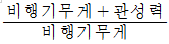
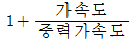
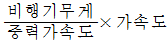
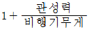
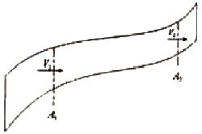
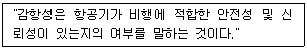
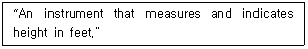
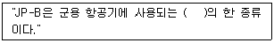
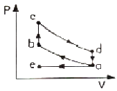
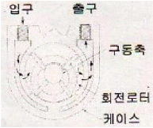

항공기관정비기능사 (2011-07-31 기출문제)
1과목: 비행원리
1. 하중 배수에 대한 표현식이 아닌 것은?




(정답률: 68%)

2. 수직축(Z축)을 중심으로 빗놀이(Yawing) 모멘트를 주기 위해 필요한 조종면은?
- 방향키(Rudder)
- 승강키(Elevator)
- 도움날개(Aileron)
- 스포일러(Spoiler)
(정답률: 88%)
3. 수평면과 θ의 각을 이루며 등속도로 정상 활공비행을 하는 비행기의 힘의 평형 상태를 옳게 나타낸 것은? (단, L은 양력, W는 항공기의 무게이다.)
- L = W
- L = Wsinθ
- L = Wcosθ
- L = Wtanθ
(정답률: 62%)
4. 다음 중 지면효과가 발생하지 않는 것은?
- 착륙하고 있는 항공기
- 지면가까이에서 비행하는 비행기
- 산막지형에서 수직하강하고 있는 항공기
- 지면가까이에서 정지비행을 하는 헬리콥터
(정답률: 89%)
5. 날개골 윗면에서 흐름의 떨어짐이 발생할 때 나타나는 현상으로 옳은 것은?
- 항력이 증가한다.
- 양력이 증가한다.
- 비행속도가 증가한다.
- 유체입자의 운동에너지가 증가한다.
(정답률: 83%)
6. 그림과 같은 유체흐름에서 A1 지점의 단면적은 32m2 이고, A2지점의 단면적은 8m2 이다. 이때 A1지점의 속도는 10m/s 일 때, A2지점의 속도는 몇 m/s 인가? (단, 각 지점의 유체밀도는 같다.)

- 8
- 10
- 32
- 40
(정답률: 85%)
7. 헬리콥터에서 전진과 후퇴시에 깃의 피치각을 변화시키는 운동을 무엇이라 하는가?
- 페더링
- 실속
- 플래핑
- 풍차식 제동
(정답률: 75%)
8. 날개길이 방향의 양력계수 분포가 일률적이고 유도항력이 최소인 날개는?
- 뒤젖힘 날개
- 타원 날개
- 앞젖힘 날개
- 테이퍼 날개
(정답률: 75%)
9. 다음 중 비행기가 정적세로안정(Static Longitudinal Stability)을 갖는 경우는?
- 받음각의 변화에 의해 발생된 키놀이 모멘트가 비행기를 원래의 평형된 받음각 상태로 돌려보낼 때
- 도움날개의 변화에 의해 발생된 키놀이 모멘트가 비행기를 원래의 평형된 받음각보다 커지는 상태로 만들때
- 받음각의 변화에 의해 발생된 빗놀이 모멘트가 비행기를 원래의 평형된 받음각 상태로 돌려보낼 때
- 받음각의 변화에 의해 발생된 옆놀이 모멘트가 비행기를 원래의 평형된 받음각보다 커지는 상태가 될 때
(정답률: 56%)
10. 날개를 지나는 흐름의 뒷부분에 발생하며 회전운동에 의하여 소용돌이치는 모양의 흐름은?
- 유도
- 와류
- 분리
- 박리
(정답률: 94%)
11. 다음 중 고항력 장치가 아닌 것은?
- 제동 낙하산(Drag chute)
- 크루거 플랩(Kruger flap)
- 에어 브레이크(Air brake)
- 역추력 장치(Thrust reverser)
(정답률: 86%)
12. 다음 중 수직꼬리날개가 실속이 일어나는 큰 옆미끄럼각에서 방향안정성을 유지하는데 크게 기여하는 것은?
- 트림태브
- 도살 핀
- 공력평형장치
- 스트레이크
(정답률: 93%)
13. 대기를 이루고 있는 기체 중에서 부피비로 보았을 때 가장 많은 것은?
- 아르곤
- 산소
- 이산화탄소
- 질소
(정답률: 91%)
14. 항공기가 200m/s 로 비행하고 있다. 이 때의 항력이 3500kgf 이라면 필요마력은 약 몇 HP 인가? (단, 1HP는 75kgfㆍm/s로 한다.)
- 1313
- 2625
- 5250
- 9333
(정답률: 66%)
15. 프로펠러 항공기의 감속도 전진 비행의 조건은? (단, T 는 추력, D는 항력이다.)
- T ＞D
- T = D
- T＜ D
- T = 2D
(정답률: 80%)
16. 다음 중 토크 렌치의 종류에 해당하지 않는 것은?
- 빔 식(Beam type)
- 제한 식(Limit type)
- 다이얼 식(Dial type)
- 자동 식(Automatic type)
(정답률: 67%)
17. 다음 문장에서 설명하는 감항성을 영어로 옳게 표시한 것은?

- Maintenance
- Comfortability
- Inspection
- Airworthiness
(정답률: 81%)
18. 캐슬 너트, 핀과 같이 풀림 방지를 할 필요가 있는 부품을 고정할 때 사용하는 것은?
- 코터핀
- 피팅
- 클레코
- 실(Seal)
(정답률: 81%)
19. 정비계획의 정확성을 유지하고, 항공기의 고장을 예방하기 위해 철저한 정비가 수행되어 계획된 시간에 차질없이 운항되도록 하기위한 정비 목적은?
- 정시성
- 안전성
- 쾌적성
- 경제성
(정답률: 87%)
20. 항공기 유관(호스)식별용 표찰에 “TOXIC"이라 표시되어 있다면 이 유관에 사용하여야 하는 물질은?
- 연료
- 유독물질
- 산소
- 프레온 가스
(정답률: 79%)
2과목: 항공기정비
21. 다음 문장이 뜻하는 계기로 옳은 것은?

- Altimeter
- Air speed indicator
- Turn and slip indicator
- Vertical velocity indicator
(정답률: 81%)
22. 일반적으로 복선식(Double twist) 안전결선방법으로 결합할 수 있는 최대 유닛(Unit)수는 몇 개인가?
- 2개
- 3개
- 4개
- 제한없다.
(정답률: 90%)
23. 다음 중 갈바닉 부식(Galvanic corrosion)이 발생하는 경우는?
- 전기가 흐를 때 발생한다.
- 같은 금속이 접촉하면 발생한다.
- 서로 다른 금속이 접촉하면 발생한다.
- 알루미늄이나 알루미늄합금에만 발생한다.
(정답률: 76%)
24. 다음 중 항공기 지상 취급(Ground handling)에 해당하지 않는 것은?
- 잭 작업
- 견인 작업
- 계류 작업
- 비행 작업
(정답률: 84%)
25. 항공기 외부 세척작업의 종류가 아닌 것은?
- 습식 세척
- 건식 세척
- 광택 작업
- 블라스트 세척
(정답률: 73%)
26. 신뢰성 정비방식에서 문제가 발견되는 단계로 옳은 것은?
- 정보수집 단계
- 분석 단계
- 정보관리 단계
- 대착 및 조치단계
(정답률: 70%)
27. 공항 시설물과 각종 장비에는 안전색채가 표시 되어 사고를 미연에 방지한다. 다음 중 녹색의 안전색체 표시를 해야 하는 장치는?
- 보일러
- 전원스위치
- 응급처치장비
- 소화기 및 화재경보장치
(정답률: 96%)
28. 황목, 중목, 세목으로 나누는 줄(File)의 분류방법 기준은?
- 줄눈의 크기
- 줄의 길이
- 줄날의 방식
- 단면의 모양
(정답률: 71%)
29. 다음 중 초음파탐상검사 시 필요한 장비가 아닌것은?
- 초음파 발생장치
- 트랜스듀서(Transducer)
- 블랙 라이트(Black light)
- 오실로스코프(Oscilloscope)
(정답률: 73%)
30. 실린더 게이지에 대한 설명이 아닌 것은?
- 칼마형 게이지가 있다.
- 아메스형 게이지가 있다.
- 검사 계기의 점검에 사용된다.
- 실린더 안지름이나 마멸량을 측정한다.
(정답률: 57%)
31. 정밀한 광학 기계로서 특수한 형태의 망원경을 이용한 검사로 육안으로 직접 검사할 수 없는 곳의 결함 발견에 이용되는 검사법은?
- 코인 검사
- 보어스코프 검사
- 와전류 검사
- 텔레스코핑 검사
(정답률: 86%)
32. 작업자가 리벳 작업하는 반대쪽에 접근할 수 없는 경우와 같이 일반 리벳을 사용하기에 부적절 한 곳에 사용하는 리벳은?
- 블라인드 리벳
- 접시머리 리벳
- 유니버설 리벳
- 둥근머리 리벳
(정답률: 81%)
33. 항공기 기체 정비작업에서의 정시점검으로 내부 구조검사에 관계되는 것은?
- A 점검
- C 점검
- ISI 점검
- D 점검
(정답률: 76%)
34. 항공기 견인 시 설명으로 옳은 것은?
- 항공기 견인 시 준비사항으로 반드시 항공기에 접지선을 접지한다.
- 견인 중에는 반드시 착륙장치(Landing Gear)에 지상 안전핀이 장탈 되야한다.
- 견인속도의 규정최대속도는 견인차운전자가 결정한다.
- 야간에 견인할 때는 항법등외에도 필요한 조명장치를 해야한다.
(정답률: 70%)
35. 항공기 조종계통 케이블에 설치된 턴버클 작업에 사용되지 않는 것은?
- 배럴
- 딤플링
- 포크
- 케이블아이
(정답률: 64%)
36. 왕복기관의 매니폴드 압력계의 수감부는 어디에 설치하는가?
- 기화기 출구
- 매니폴드
- 기화기 입구
- 흡기밸브 입구
(정답률: 75%)
37. 정압비열과 정적비열의 비를 무엇이라 하는가?
- 비열비
- 압축비
- 열효율
- 열해리
(정답률: 77%)
38. 다음 중 왕복기관의 성능향상에 가장 큰 영향을 미치는 것은?
- 점화 장치
- 커넥팅 로드
- 크랭크 축
- 실린더의 압축비
(정답률: 78%)
39. 가스터빈기관의 작동 원리에 해당하는 뉴튼의 제3법칙은?
- 관성의 법칙
- 양력발생의 법칙
- 가속도의 법칙
- 작용 · 반작용의 법칙
(정답률: 91%)
40. 항공용 가스터빈기관의 터빈 깃 냉각방법 중 터빈 깃의 내부를 중공으로 제작하여 이곳으로 차가운 공기가 지나가게 함으로써 터빈 깃을 냉각시키는 방식은?
- 대류 냉각
- 침출 냉각
- 충돌 냉각
- 공기막 냉각
(정답률: 73%)
3과목: 항공기관
41. 항공기용 왕복기관에서 공냉식 냉각 계통과 가장 관계가 먼 것은?
- 냉각 핀(Cooling Fin)
- 배풀(Baffle)
- 카울 플랩(Cowl Flap)
- 라디에이터(Radiater)
(정답률: 77%)
42. 다음 중 왕복기관의 실린더 구성품에 해당되지 않는 것은?
- 실린더 헤드(Head)
- 실린더 배럴(Barrel)
- 배기 콘(Exhaust cone)
- 냉각 핀(Cooling fin)
(정답률: 79%)
43. 일반적으로 터보프롭기관에서 프로펠러는 총 추력의 약 몇 % 의 추력을 발생시키는가?
- 10~25
- 50~60
- 75~90
- 100
(정답률: 70%)
44. 다음 괄호 안에 알맞은 말은?

- 연료
- 윤활유
- 작동유
- 방청유
(정답률: 70%)
45. 다음 중 왕복기관을 분류하는 방법이 다른 것은?
- 대향형 기관
- V형 기관
- 공랭식 기관
- 직렬형 기관
(정답률: 73%)
46. 가스터빈기관에서 연료-공기 혼합비를 조정하는 연료조정장치의 고장으로 인해 발생하는 비정상적인 시동이 아닌 것은?
- 과열 시동(Hot Start)
- 시동 불능(Not Start)
- 결핍 시동(Hung Start)
- 자동 시동(Auto Start)
(정답률: 75%)
47. 효율을 증대시키기 위하여 대형 가스터빈기관의 작동 중 터빈 블레이드 팁 간극(Clearnace)을 적절하게 유지하는 방법으로 옳은 것은?
- 고압 압축기 공기를 터빈케이스에 분사한다.
- 팬부분 공기를 터빈케이스의 외면에 분사한다.
- 터빈케이스 내면을 진원이 되도록 연마 가공한다.
- 저압 압축기 공기를 터빈케이스 내면에 분사한다.
(정답률: 49%)
48. 항공기용 왕복기관의 밸브 기구 중 밸브 스프링에 관한 설명으로 틀린 것은?
- 밸브 스프링은 밸브를 닫아 주는 역할을 수행한다.
- 헬리컬 코일 스프링(Helical-coil spring) 모양이다.
- 밸브 스프링은 피치가 같고 직경이 다른 2개로 구성 되어 있다.
- 밸브 스프링이 2개 이상으로 되어 있는 이유는 기관 작동시 스프링 서지 진동을 급속히 완충시키기 위함 이다.
(정답률: 50%)
49. 항공기가 강하 또는 착륙(Let Down or Landing)시 수동 혼합 조종 장치의 위치는?
- 희박(Lean) 위치
- 최대 농후(Full Rich) 위치
- 외기 온도에 따라 수동 혼합 조종 장치의 위치를 변화시킨다.
- 외기 습도에 따라 수동 혼합 조종 장치의 위치를 변화시킨다.
(정답률: 74%)
50. 왕복기관에서 과급기(Supercharge)가 없는 기관의 매니폴드 압력과 대기압과의 관계를 옳게 설명한 것은?
- 높은 고도에서 매니폴드 압력은 대기압보다 높다.
- 낮은 고도에서 매니폴드 압력은 대기압보다 높다.
- 고도와 관계없이 매니폴드 압력은 대기압과 같다.
- 고도와 관계없이 매니폴드 압력은 대기압보다 낮다.
(정답률: 65%)
51. 그림과 같은 오토사이클의 P-V 선도에서 c → d는 무슨 과정인가?

- 단열 팽창
- 단열 압축
- 정적 방열
- 정적 가열
(정답률: 64%)
52. 가스터빈기관에서 축류 압축기에 대한 설명으로 틀린 것은?
- 전면 면적(Frontal Area)이 작아서 항력(Drag)이 작다.
- 원심 압축기에 비해 제작이 간단하고 비용이 저렴하다.
- 압축효율(High Peak Efficiency)이 높다.
- 스테이지(Stage)당 압력상승이 낮다.
(정답률: 62%)
53. 다음 중 터보제트기관의 역추력 장치(Thrust Reverser)에 대한 설명으로 옳은 것은?
- 배기가스의 속도를 감소시킨다.
- 배기가스의 흐름을 거꾸로 한다.
- 배기 덕트의 크기를 감소시킨다.
- 역플랩(Reverser Flap)을 작동시킨다.
(정답률: 73%)
54. 일반적으로 주연료펌프(Main fuel pump)에 사용되는 그림과 같은 펌프는?

- 베인펌프
- 원심펌프
- 지로터펌프
- 기어펌프
(정답률: 55%)
55. 가스터빈기관의 연소실내에 사용되는 2차 공기에 관한 설명으로 옳은 것은?
- 라이너를 냉각시킨다.
- 연소기 압력을 증가시킨다.
- 연소기 온도를 증가시킨다.
- 에너지를 더 많이 확보한다.
(정답률: 53%)
56. 왕복기관 중 저온으로 작동하는 기관에 저온 점화 플러그를 사용하였다면 발생하는 현상은?
- 모두 정상적인 작동을 한다.
- 조기 점화 현상이 나타난다.
- 스파크 플러그에 탄소 찌꺼기가 부착된다.
- 실린더 내부가 저온이 되어 열소비율이 증가한다.
(정답률: 54%)
57. 다음 중 윤활유 온도를 적당하게 유지시키기 위하여 윤활유 냉각기의 통과 여부를 결정하는 장치는?
- 윤활여과 밸브
- 윤활유 온도조절밸브
- 윤활유 바이패스밸브
- 윤활유 여압 및 드레인밸브
(정답률: 56%)
58. 다음 중 가스터빈기관의 시동 시 점화 스위치가 꺼지는(OFF) 때는?
- 완속 EGT시
- 최대 EGT시
- 연료 공급 시
- 자립 회전 속도 도달 후
(정답률: 59%)
59. 가스터빈기관의 윤활계통에서 섬프(Sump) 안의 공기압이 높을 때, 탱크로 압력이 빠지게 하는 역할을 하는 것은?
- 드레인 밸브(Drain valve)
- 릴리프 밸브(Relief valve)
- 바이패스 밸브(Bypass valve)
- 섬프 벤트 체크 밸브(Sump vent check valve)
(정답률: 52%)
60. 고출력 왕복기관에 주로 사용되며, 축 방향으로 긴 흠이 나 있는 프로펠러 축은?
- 테이퍼축
- 맞대기축
- 스플라인축
- 플랜지축
(정답률: 49%)
이유는 다른 보기들은 모두 "자기자본 / 총자산"으로 표현된 하중 배수식이지만, ""은 "자기자본 / 순자산"으로 표현되어 있기 때문입니다. 순자산은 총자산에서 부채를 뺀 값이므로, 이 식은 부채를 고려하지 않은 자기자본 비율을 나타내기 때문에 하중 배수식으로 사용하기에는 적합하지 않습니다.